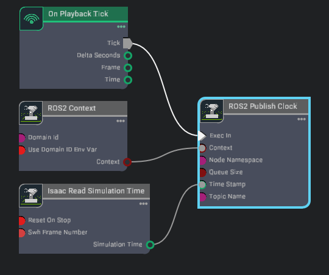

ROS 2 Installation (Default)#
NVIDIA Isaac Sim provides a ROS 2 bridge for ROS system integration. The same set of common components are used to define the types of data being published and received by the simulator.
Isaac Sim supported ROS distros are:
Platform |
ROS 2 |
|---|---|
Ubuntu 24.04 |
Jazzy (recommended) |
Ubuntu 22.04 |
Humble, Jazzy |
Windows 11 |
Humble |
For the ROS 2 bridge, Isaac Sim is compatible with ROS 2 Jazzy and ROS 2 Humble.
Attention
Experimental: Native ROS 2 Distro Support – Isaac Sim now experimentally supports loading any ROS 2 distro that is natively installed on your platform (Ubuntu 22.04 or Ubuntu 24.04). To use this, source your locally installed ROS 2 distro and launch Isaac Sim from the same terminal. While Humble and Jazzy remain the officially tested and recommended distros, other natively supported distros may work with this workflow.
ROS 2 Jazzy on Ubuntu 24.04 is recommended. If you wish to proceed with any other configuration, refer to the ROS 2 installation guide for your platform, ROS 2 Installation (Other Platforms).
All steps moving forward assume you are using Ubuntu 24.04 and ROS 2 Jazzy.
Install ROS 2 (Ubuntu 24.04 and ROS 2 Jazzy)#
Download ROS 2 Jazzy following the instructions on the official website:
(Optional) Run the command below to install the package on your system. If you have built ROS 2 from source, clone the package and include it in your ROS 2 installation workspace before re-building. If you don’t need to run the vision_msgs publishers, you can skip this step. Some message types (
Detection2DArrayandDetection3DArray, which are used for publishing bounding boxes) in the ROS 2 Bridge depend on the vision_msgs_package.sudo apt install ros-jazzy-vision-msgs
(Optional) Run the command below to install the package on your system. If you have built ROS 2 from source, clone the package and include it in your ROS 2 installation workspace before re-building. If you don’t need to run the
ackermann_msgspublishers/subscribers, you can skip this step. Some message types (AckermannDriveStampedused for publishing and subscribing to Ackermann steering commands) in the ROS 2 Bridge depend on the ackermann_msgs_package.sudo apt install ros-jazzy-ackermann-msgs
Ensure that the ROS environment is sourced in the terminal or in your
~/.bashrcfile. You must perform this step each time and before using any ROS commands.source /opt/ros/jazzy/setup.bash
To install the ROS 2 workspaces and run our tutorials, follow the steps in the Isaac Sim ROS Workspaces section.
Isaac Sim ROS Workspaces#
The ROS 2 workspaces contain the necessary packages to run our ROS 2 tutorials and examples.
Included ROS 2 Packages#
A list of sample ROS 2 packages created for NVIDIA Isaac Sim:
carter_navigation: Contains the required launch file and ROS 2 navigation parameters for the NVIDIA Carter robot.
cmdvel_to_ackermann: Contains a script file and launch file used to convert command velocity messages (Twist message type) to Ackermann Drive messages (
AckermannDriveStampedmessage type).custom_message: Contains the required launch file and ROS 2 navigation parameters for the NVIDIA Carter robot.
h1_fullbody_controller: Contains the required launch files, parameters and scripts for running a full body controller for the H1 humanoid robot.
isaac_compressed_image_decoder: Contains a decoder node for converting H.264 compressed images (
sensor_msgs/CompressedImage) back to rawsensor_msgs/Imagemessages using PyAV.isaac_moveit: Contains the launch files and parameter to run Isaac Sim with the MoveIt2 stack.
isaac_ros_navigation_goal: Used to automatically set random or user-defined goal poses in ROS 2 Navigation.
isaac_ros2_messages: A custom set of ROS 2 service interfaces for retrieving poses as well as listing prims and manipulate their attributes.
isaacsim_bringup: Contains launch files and scripts for running and launching Isaac Sim as a ROS 2 node.
isaac_tutorials: Contains launch files, RViz2 config files, and scripts for the tutorial series.
iw_hub_navigation: Contains the required launch file and ROS 2 navigation parameters for the iw.hub robot.
Important
Source your ROS 2 workspace each time a new terminal is opened or whenever a new ROS 2 package is included. Then, run Isaac Sim from the same terminal.
Setup ROS 2 Workspaces#
To run the ROS 2 tutorials and examples, it’s necessary to source your ROS 2 installation workspace in the terminal you plan to work in.
To build the Isaac Sim ROS workspaces, ensure you have a system install of the Install ROS 2 (Ubuntu 24.04 and ROS 2 Jazzy).
Important
You are also able to build the workspaces using a ROS Docker container, as described in Running ROS in Docker Containers. Return to this step after setting up your Docker container.
Clone the Isaac Sim ROS Workspace Repository from https://github.com/isaac-sim/IsaacSim-ros_workspaces.
A few ROS packages are needed to go through the Isaac Sim ROS 2 tutorial series. The entire ROS 2 workspaces are included with the necessary packages.
If you have built ROS 2 from source, replace the
source /opt/ros/<ros_distro>/setup.bashcommand withsource <path_ros2_ws>/install/setup.bashbefore building additional workspaces.To build the ROS 2 workspace, you might need to install additional packages:
# For rosdep install command sudo apt install python3-rosdep build-essential # For colcon build command sudo apt install python3-colcon-common-extensions
Ensure that your native ROS 2 has been sourced:
source /opt/ros/jazzy/setup.bash
Resolve any package dependencies from the root of the ROS 2 workspace by running the following command:
cd jazzy_ws git submodule update --init --recursive # If using docker, perform this step outside the container and relaunch the container rosdep install -i --from-path src --rosdistro jazzy -y
Build the workspace:
colcon buildUnder the root directory, new
build,install, andlogdirectories are created.To start using the ROS 2 packages built within this workspace, open a new terminal and source the workspace with the following commands:
source /opt/ros/jazzy/setup.bash cd jazzy_ws source install/local_setup.bash
Configuring Options and Enabling Internal ROS Libraries (Optional)#
If you require ROS Docker containers and do not have a native installation of ROS 2 available, you can run Isaac Sim with the internal ROS libraries that ship with Isaac Sim.
Using Internal Isaac Sim ROS Libraries#
In Ubuntu 24.04, Isaac Sim automatically loads the internal ROS 2 Jazzy libraries, if no other ROS libraries are sourced. Use the regular launch command to run Isaac Sim with the ROS 2 Bridge enabled.
./isaac-sim.sh
Note
The ROS_DISTRO environment variable is used to check whether ROS has been sourced.
Using Terminal or Enable ROS 2 Python Standalone Scripts#
If you are using ./python.sh to run standalone Isaac Sim scripts, you must manually enable the internal libs.
To directly set a specific internal ROS 2 library, you must set the following environment variables in a new terminal or command prompt before running Isaac Sim. If Isaac Sim is installed in a non-default location, replace isaac_sim_package_path environment variable with the path to your Isaac Sim installation root folder.
To run Isaac Sim using manually selected ROS 2 internal libraries (override to Jazzy):
export isaac_sim_package_path=$HOME/isaacsim export ROS_DISTRO=jazzy export RMW_IMPLEMENTATION=rmw_fastrtps_cpp # Can only be set once per terminal. # Setting this command multiple times will append the internal library path again potentially leading to conflicts export LD_LIBRARY_PATH=$LD_LIBRARY_PATH:$isaac_sim_package_path/exts/isaacsim.ros2.core/jazzy/lib # Run Isaac Sim $isaac_sim_package_path/isaac-sim.sh
To run using Standalone Scripts:
export isaac_sim_package_path=$HOME/isaacsim export ROS_DISTRO=jazzy export RMW_IMPLEMENTATION=rmw_fastrtps_cpp # Can only be set once per terminal. # Setting this command multiple times will append the internal library path again potentially leading to conflicts export LD_LIBRARY_PATH=$LD_LIBRARY_PATH:$isaac_sim_package_path/exts/isaacsim.ros2.core/jazzy/lib # Run Isaac Sim Standalone scripts $isaac_sim_package_path/python.sh <path/to/standalone/script>
Enabling the ROS 2 Bridge#
The instructions On Linux with Fast DDS are the recommended way to enable the ROS 2 bridge.
You can also enable:
On Linux with Fast DDS#
Preparation
If using the ROS 2 Bridge to communicate with ROS 2 nodes running on the same machine, use the default configuration of FastDDS. This ensures you are using shared memory transport resulting in the best simulation performance.
If you intend to use the ROS 2 bridge to connect to ROS nodes on different machines on the same network, before launching Isaac Sim, you must set the Fast DDS middleware on all terminals that will be passing ROS 2 messages and enable UDP transport:
Ensure
fastdds.xmlfile and environment variable are set:
If you followed Setup ROS 2 Workspaces, a
fastdds.xmlfile is located at the root of the <ros2_ws> folder. Set the environment variable by typingexport FASTRTPS_DEFAULT_PROFILES_FILE=<path_to_ros2_ws>/fastdds.xmlin all the terminals that will use ROS 2 functions.If you DID NOT follow Setup ROS 2 Workspaces, create a file named
fastdds.xmlunder~/.ros/, paste the following snippet link into the file:<?xml version="1.0" encoding="UTF-8" ?> <license>Copyright (c) 2022-2026, NVIDIA CORPORATION. All rights reserved. NVIDIA CORPORATION and its licensors retain all intellectual property and proprietary rights in and to this software, related documentation and any modifications thereto. Any use, reproduction, disclosure or distribution of this software and related documentation without an express license agreement from NVIDIA CORPORATION is strictly prohibited.</license> <profiles xmlns="http://www.eprosima.com/XMLSchemas/fastRTPS_Profiles" > <transport_descriptors> <transport_descriptor> <transport_id>UdpTransport</transport_id> <type>UDPv4</type> </transport_descriptor> </transport_descriptors> <participant profile_name="udp_transport_profile" is_default_profile="true"> <rtps> <userTransports> <transport_id>UdpTransport</transport_id> </userTransports> <useBuiltinTransports>false</useBuiltinTransports> </rtps> </participant> </profiles>
Run
export FASTRTPS_DEFAULT_PROFILES_FILE=~/.ros/fastdds.xmlin the terminals that will use ROS 2 functions.(Optional) Run
export ROS_DOMAIN_ID=(id_number)before launching Isaac Sim. Later you can decide whether to use thisROS_DOMAIN_IDinside your environment, or explicitly use a different ID number for any given topic.Source your ROS 2 installation or internal ROS 2 libraries and workspace before launching Isaac Sim.
On Linux using Cyclone DDS#
Isaac Sim supports Cyclone DDS middleware on Linux with ROS 2 Humble and Jazzy. The ROS 2 bridge uses Fast DDS when RMW_IMPLEMENTATION is unset. To switch to Cyclone DDS, stop Isaac Sim, run export RMW_IMPLEMENTATION=rmw_cyclonedds_cpp in the terminal, and relaunch.
Enabling the ROS Bridge using Cyclone DDS#
Follow the ROS 2 Humble installation steps or ROS 2 Jazzy installation steps to setup Cyclone DDS for your ROS 2 installation.
Note
Isaac Sim ROS 2 Humble and Jazzy internal libraries include Cyclone DDS compiled with Python 3.12.
Before running Isaac Sim, make sure to set the
RMW_IMPLEMENTATIONenvironment variable. Moving forward, if any examples show setting the environment variable tormw_fastrtps_cppyou can replace it with the command:export RMW_IMPLEMENTATION=rmw_cyclonedds_cpp
On Linux using Zenoh#
Isaac Sim supports RMW Zenoh middleware for Linux and ROS 2 Jazzy. Zenoh is an open source communication protocol designed for efficient data distribution across heterogeneous systems, providing an alternative to traditional DDS implementations.
Note
Currently, Isaac Sim Zenoh interfaces do not come packaged with internal libraries. Please install RMW Zenoh on your system and source it before running Isaac Sim.
For more details on Zenoh, see the ROS 2 Zenoh documentation.
Installing and running Zenoh
Install the Zenoh RMW implementation for ROS 2 Jazzy:
sudo apt install ros-jazzy-rmw-zenoh-cpp
In a separate terminal, source ROS 2 and start the Zenoh router. The router must be running before any ROS 2 nodes can discover each other:
# Terminal 1: Start the Zenoh router source /opt/ros/jazzy/setup.bash ros2 run rmw_zenoh_cpp rmw_zenohd
Note
Without the Zenoh router, nodes will not be able to discover each other since multicast discovery is disabled by default in the node’s session config. Instead, nodes receive discovery information about other peers via the Zenoh router’s gossip functionality.
Before running Isaac Sim, set the
RMW_IMPLEMENTATIONenvironment variable in the terminal where you will launch Isaac Sim. Moving forward, if any examples show setting the environment variable tormw_fastrtps_cppyou can replace it with the command below:export RMW_IMPLEMENTATION=rmw_zenoh_cpp
Source ROS 2 and run Isaac Sim:
source /opt/ros/jazzy/setup.bash ./isaac-sim.sh
For any additional terminals running ROS 2 nodes that need to communicate with Isaac Sim, ensure the same environment variable is set:
export RMW_IMPLEMENTATION=rmw_zenoh_cpp source /opt/ros/jazzy/setup.bash # Run your ROS 2 commands
Disabling the ROS Bridge in isaac-sim.sh#
To disable the ROS bridge, use the following steps:
Open the file located at
~/isaacsim/apps/isaacsim.exp.full.kit.Find the line
isaac.startup.ros_bridge_extension = "isaacsim.ros2.bridge".Change it to
isaac.startup.ros_bridge_extension = ""to disable the ROS 2 bridge.Save and close the file.
Running ROS in Docker Containers#
Ensure you have already cloned Isaac Sim ROS Workspace Repository.
- Navigate to the root of the cloned repo and run the following command. If the repo was cloned to a different location, make sure to update the path in
~/IsaacSim-ros_workspacesto the correct one: cd ~/IsaacSim-ros_workspaces git submodule update --init --recursive
- Navigate to the root of the cloned repo and run the following command. If the repo was cloned to a different location, make sure to update the path in
Run the appropriate ROS 2 Docker container and mount the appropriate workspace from the Isaac Sim ROS Workspaces repo. If the repo was cloned to a different location, make sure to update the path in
-v ~/IsaacSim-ros_workspacesto the correct one:xhost + docker run -it --rm --net=host --env="DISPLAY" --env="ROS_DOMAIN_ID" -v ~/IsaacSim-ros_workspaces/jazzy_ws:/jazzy_ws --name ros_ws_docker osrf/ros:jazzy-desktop /bin/bash
xhost + docker run -it --rm --net=host --env="DISPLAY" --env="ROS_DOMAIN_ID" -v ~/IsaacSim-ros_workspaces/jazzy_ws:/jazzy_ws --name ros_ws_docker arm64v8/ros:jazzy /bin/bash
Here
--net=hostallows communication between Isaac Sim and ROS Docker containers.xhost +and--env="DISPLAY"facilitate passing the DISPLAY environment variable, which enables GUI applications, such asrvizto open from the Docker container.--name <container name>allows you to refer to the container with a fixed name.Inside the Docker container navigate to the ROS workspace.
cd /${ROS_DISTRO}_ws
Inside the Docker container, set the
FASTRTPS_DEFAULT_PROFILES_FILEenvironment variable following instructions in On Linux with Fast DDS.To install additional dependencies, build the workspace, and source the workspace after it’s built:
cd /${ROS_DISTRO}_ws apt-get update git submodule update --init --recursive # If using docker, perform this step outside the container and relaunch the container rosdep install --from-paths src --ignore-src --rosdistro=$ROS_DISTRO -y source /opt/ros/$ROS_DISTRO/setup.sh colcon build source install/local_setup.bash
If you need to open a new terminal, open the existing Docker:
docker exec -it ros_ws_docker /bin/bash -c 'source /opt/ros/$ROS_DISTRO/setup.bash; exec bash'
Optionally, to test your installation you can setup a basic publisher of clocks inside Isaac Sim using the OmniGraph node Isaac Sim OmniGraph Tutorial:
Press play in the simulator.
Open a separate terminal, open the Docker, set the
FASTRTPS_DEFAULT_PROFILES_FILEenvironment variable.Source ROS 2.
Verify that
ros2 topic echo /clockprints the timestamps coming from Isaac Sim.
{kind=link}
